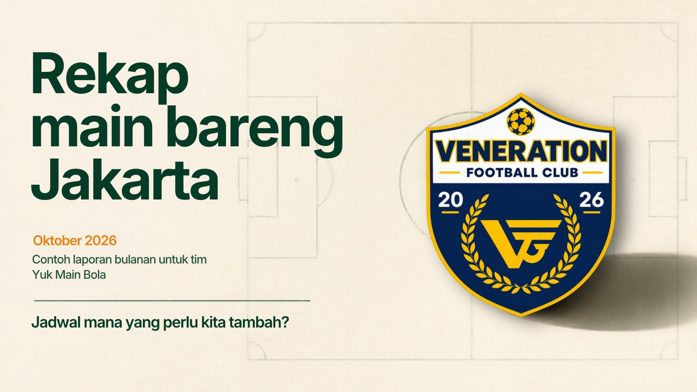

Laporan operasional Yuk Main Bola
Oktober 2026, dibuat di Canva
Dua karya Canva untuk komunitas minisoccer Yuk Main Bola di Jakarta, dari data yang sama: dashboard interaktif untuk dipantau sehari-hari, dan presentasi rekap bulanan untuk dibahas di rapat tim. Keduanya menjawab satu pertanyaan: jadwal mana yang perlu ditambah?
Dashboard operasional interaktif
Merangkum kehadiran, tren kunjungan profil Instagram, topik pertanyaan pemain yang paling sering masuk, serta stok peralatan dan P3K yang perlu dilengkapi. Dibagi ke empat tab dengan filter indikator dan bulan.
Presentasi rekap bulanan: "Rekap main bareng Jakarta"
Versi ringkas untuk rapat tim. Setiap slide membawa satu pesan, mulai dari tren kunjungan dan klik jadwal, keterisian slot per sesi, sampai dua langkah yang bisa dicoba bulan depan. Geser dengan tombol panah atau klik gambar kecil di bawah.

Semua angka adalah data simulasi untuk keperluan portofolio.